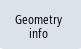

You can display information for each point selected in the 3D model.
This is helpful when determining the depth data (Z) for a contour (only X/Y coordinates), for example. This means that this contour can be machined using path milling.
You can display information for the following types of points:
Requirement
Procedure
|  | 1. | Press the "Geometry info" softkey. |
| | 2. | Press the "Point" softkey. The following points are displayed. Each point comprises 3 coordinate values (X, Y, Z), which are displayed. On turning machines, value X is additionally displayed as diameter. The displayed coordinates always refer to the coordinate system of the plane on which the point information was opened. |
| | |
| | 3. | Click on the desired point in the 3D model. The information about the selected point is displayed in the "Point info" window. You can directly use a component of the point in the diagram by copying and pasting.
This means that it is possible to insert the Z components of a new contour in the machining screen form. |